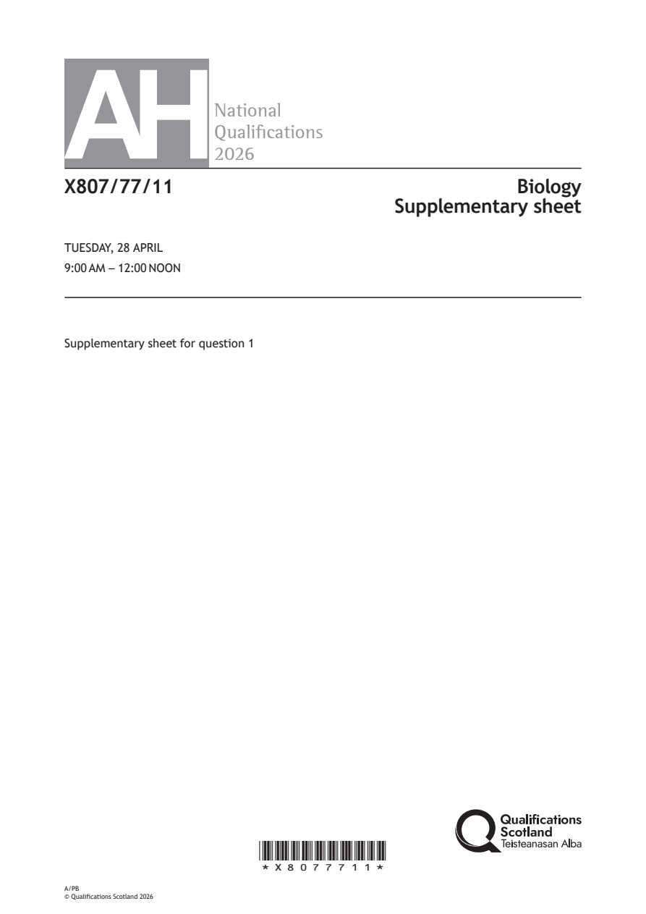
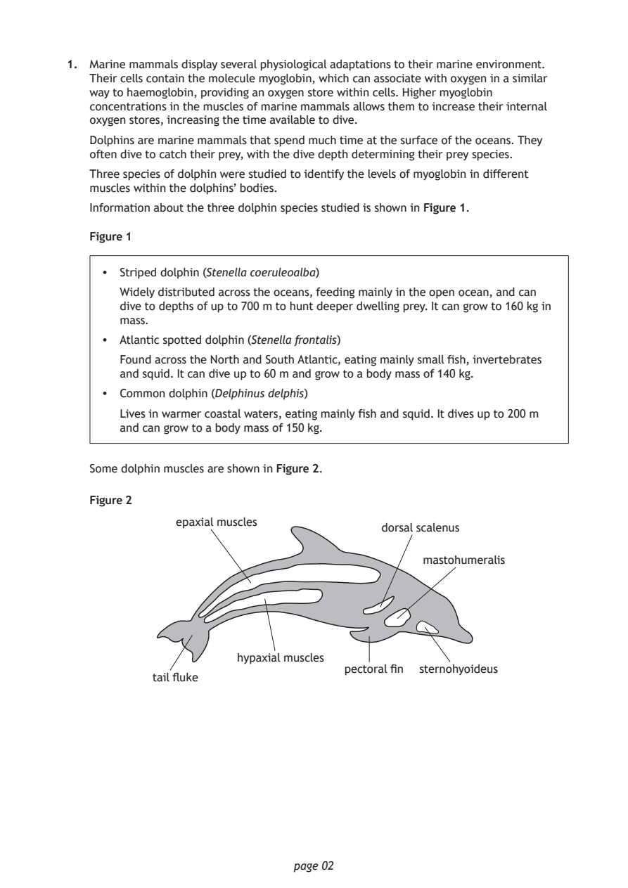
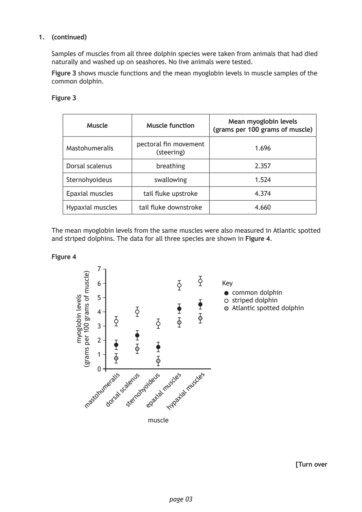
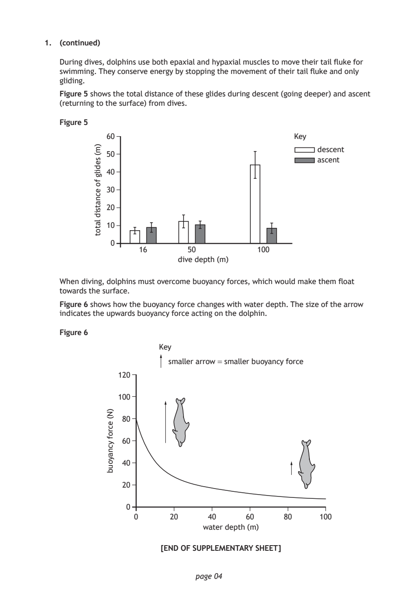

Source: SQA / Qualifications Scotland. This is a StemInteract HTML companion, not an official HTML edition. Use the original images for figures, graphs and table layout.
PDF page 1

Selectable page text
AH
National
Qualications
2026
X807/77/11 Biology
Supplementary sheet
TUESDAY, 28 APRIL
9:00 AM – 12:00 NOON
Supplementary sheet for question 1
*X8077711*
A/PB
© Qualifications Scotland 2026PDF page 2

Selectable page text
1. Marine mammals display several physiological adaptations to their marine environment.
Their cells contain the molecule myoglobin, which can associate with oxygen in a similar
way to haemoglobin, providing an oxygen store within cells. Higher myoglobin
concentrations in the muscles of marine mammals allows them to increase their internal
oxygen stores, increasing the time available to dive.
Dolphins are marine mammals that spend much time at the surface of the oceans. They
often dive to catch their prey, with the dive depth determining their prey species.
Three species of dolphin were studied to identify the levels of myoglobin in different
muscles within the dolphins’ bodies.
Information about the three dolphin species studied is shown in Figure 1.
Figure 1
• Striped dolphin (Stenella coeruleoalba)
Widely distributed across the oceans, feeding mainly in the open ocean, and can
dive to depths of up to 700 m to hunt deeper dwelling prey. It can grow to 160 kg in
mass.
• Atlantic spotted dolphin (Stenella frontalis)
Found across the North and South Atlantic, eating mainly small fish, invertebrates
and squid. It can dive up to 60 m and grow to a body mass of 140 kg.
• Common dolphin (Delphinus delphis)
Lives in warmer coastal waters, eating mainly fish and squid. It dives up to 200 m
and can grow to a body mass of 150 kg.
Some dolphin muscles are shown in Figure 2.
Figure 2
epaxial muscles
dorsal scalenus
mastohumeralis
hypaxial muscles
pectoral fin sternohyoideus
tail fluke
page 02PDF page 3

Selectable page text
1. (continued)
Samples of muscles from all three dolphin species were taken from animals that had died
naturally and washed up on seashores. No live animals were tested.
Figure 3 shows muscle functions and the mean myoglobin levels in muscle samples of the
common dolphin.
Figure 3
Mean myoglobin levels
Muscle Muscle function
(grams per 100 grams of muscle)
pectoral fin movement
Mastohumeralis 1.696
(steering)
Dorsal scalenus breathing 2.357
Sternohyoideus swallowing 1.524
Epaxial muscles tail fluke upstroke 4.374
Hypaxial muscles tail fluke downstroke 4.660
The mean myoglobin levels from the same muscles were also measured in Atlantic spotted
and striped dolphins. The data for all three species are shown in Figure 4.
Figure 4
7
6
common dolphin
5
striped dolphin
Atlantic spotted dolphin
4
3
2
1
0
page 03
slevel
nibolgoym
)elcsum
fo
smarg
001
rep
smarg(
Key
i s u s u s e s e s
n e
m a s ^{t} o h u m d e o r ^{a} r s ^{l} a ₗ s c a s l t e e r n o h y o e ⁱ d p a x ⁱ a ₗ m u s y ^{c} p ^{l} a x ⁱ ₐₗ m u s ^{c} ^{l}
h
muscle
[Turn overPDF page 4

Selectable page text
1. (continued)
During dives, dolphins use both epaxial and hypaxial muscles to move their tail fluke for
swimming. They conserve energy by stopping the movement of their tail fluke and only
gliding.
Figure 5 shows the total distance of these glides during descent (going deeper) and ascent
(returning to the surface) from dives.
Figure 5
60
descent
50
ascent
40
30
20
10
0
dive depth (m)
page 04
)m(
sedilg
fo
ecnatsid
latot
Key
16 50 100
When diving, dolphins must overcome buoyancy forces, which would make them float
towards the surface.
Figure 6 shows how the buoyancy force changes with water depth. The size of the arrow
indicates the upwards buoyancy force acting on the dolphin.
Figure 6
Key
smaller arrow = smaller buoyancy force
120
100
80
60
40
20
0
0 20 40 60 80 100
water depth (m)
)N(
ecrof
ycnayoub
[END OF SUPPLEMENTARY SHEET]